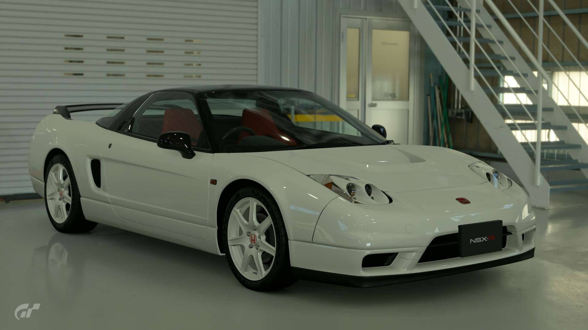
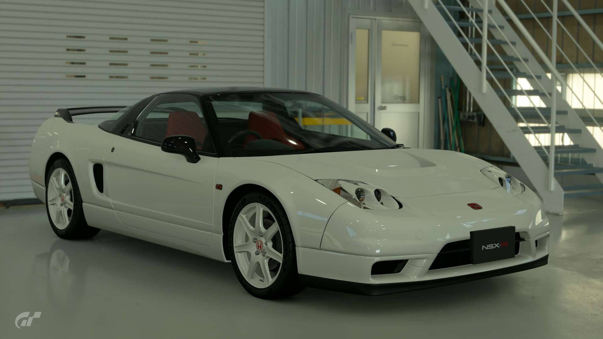

2002 Honda NSX-R
Released in 2002, this variant is an updated version of the first generation NSX Type R. Using the NA2 model NSX as its base, it boasts a 3.2L V6 engine. its main selling point is its refined aerodynamic profile. Modifications to its underside have improved air flow, and several lightweight components have been added. As a result, it offers superior handling and stability at high speeds. The naturally-aspirated V6 is both satisfying and powerful, proving this is the perfect car to challenge any circuit.
- Used (12489.2 mi)
- Stock
- 6MT
- Saitama, Japan
- Championship White
- 295hp
¥7,500,000